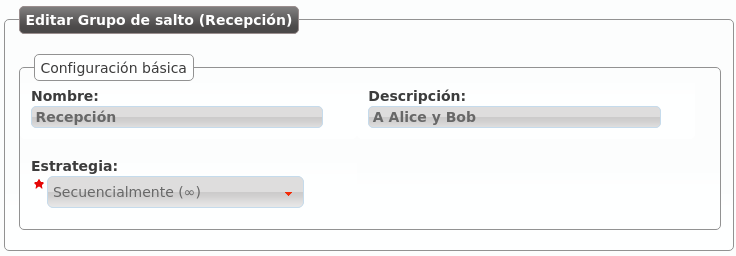
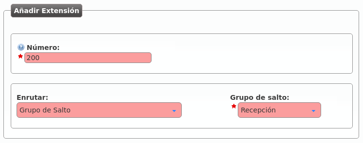

Hunt groups¶
The hungroups allows configuring more complex ringing process that the traditional call to a user.
There are multiple types:
- Ring all
- The call will make all the terminals of the group during a predefined time.
- Sequential
- The call will jump from one user to another in a predefined order ringing during the configured time. If the call is not answered by any user of the group, it will be hanguped (or trigger the no answer logic).
- Sequential (infinite)
- The call will jump from one user to another in a predefined order ringing during the configured time. If the call is not answered by any user of the group, the call will jump again to the first member of the group and keep looping.
- Random
- The call will jump from one user to another in a random order, ringing during the configured time. If the call is not answered by any user of the group, it will be hanguped (or trigger the no answer logic).
Example 1: Ringall hunt group
The following example will show how to create a hunt group that will call our 2 users at the same time during 30 seconds:

Pressing the proper icon, we can add Alice and Bob to the hunt group:

Example 2: Sequential hunt group
We will edit the hunt group to convert it into sequential: the call will ring Alice during 10 seconds, then it will ring Bob 15 seconds, repeting this process until one of them answers.
For this type of groups we have to configure priority (the call will jump from the users with lower number priority to the ones with higher number priority) and a ringing time for each user.

Hint
Hunt groups can be routed from any process of IvozProvider by simply adding an extension that route to them.
Let’s create a new extension that routes to this hunt group:
Hint
When configuring a huntgroup, you can prevent missed calls on called members with Prevent missed calls setting:
- Yes: calls generated by the huntgroup will never generate missed calls on called members.
- No: The behaviour of this setting depends on the huntgroup type:
- RingAll: calls generated by the huntgroup will generate missed calls on called members only if none of them answers the call.
- Remaining types: calls generated by the huntgroup will generate missed calls on every called member that does not answer the call.